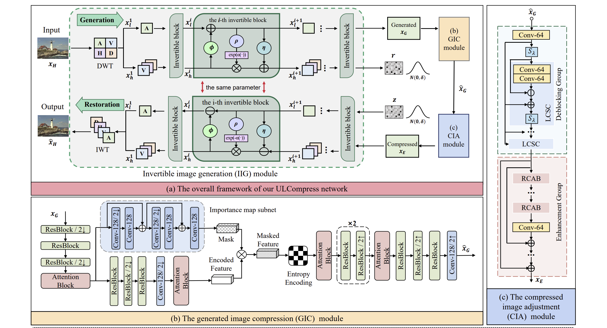
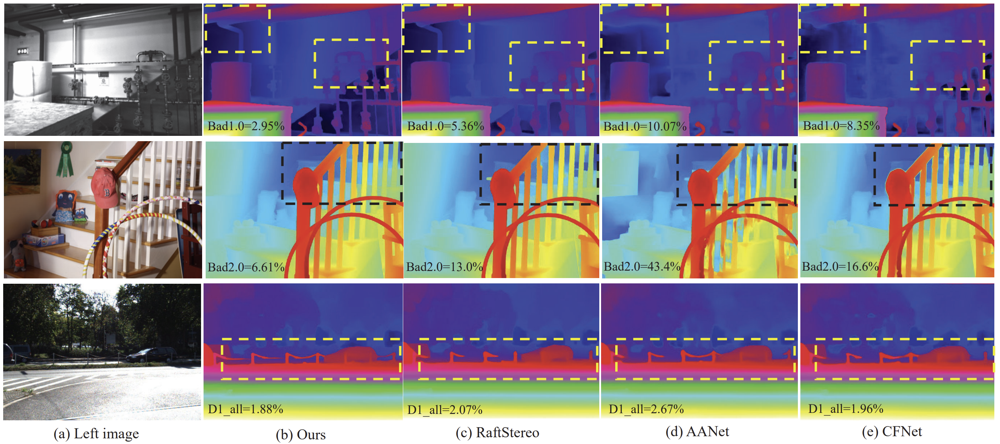
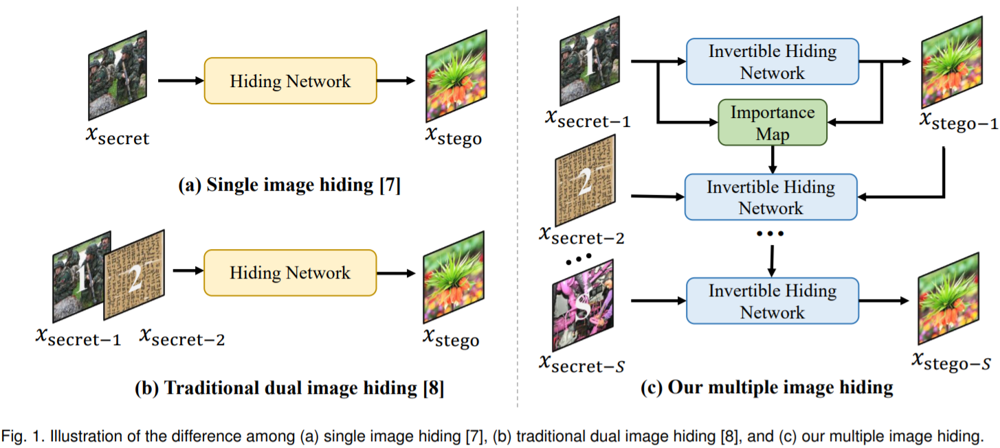
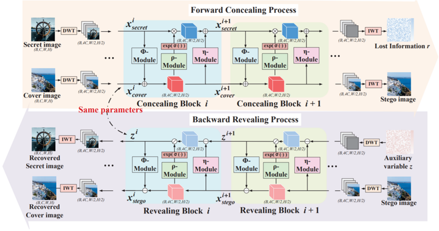
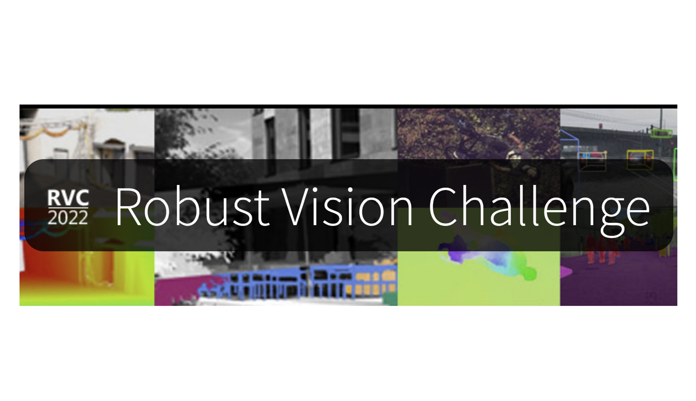
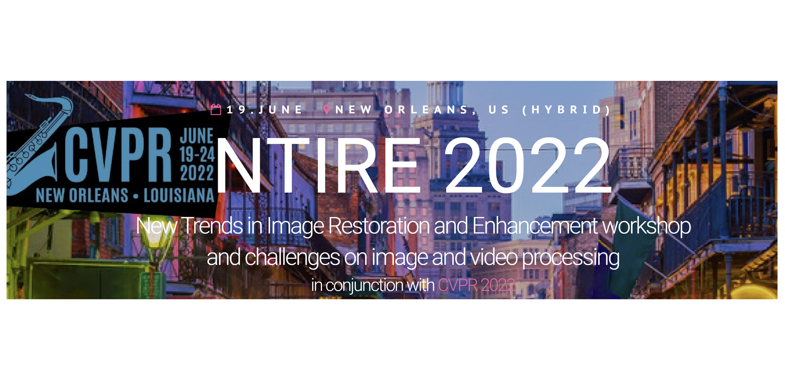

Ye MaoPh.D. StudentDept. of Electrical and Electronic Engineering Imperial College London London, UK Email: j.jing23@imperial.ac.uk Github: Link Google Scholar: Link |
|
Biography
I am a Ph.D. student at Imperial College London, supervised by Professor Krystian Mikolajczyk. I do research in computer vision, including stereo matching and depth estimation.
Before starting my Ph.D., I completed my Master's Degree at Beihang University in 2023, where I was co-supervised by Professor Zhenyu Guan, Professor Mai Xu and Associate Professor Xin Deng. During my master's study, I interned at Megvii Research. I also completed my Bachelor's Degree at Beihang University in 2020.Publications
 |
Match-Stereo-Videos: Bidirectional Alignment for Consistent Dynamic Stereo Matching Junpeng Jing, Ye Mao, and Krystian Mikolajczyk Arxiv 2024. [Project Page] [Arxiv] [Code] |
 |
OpenDlign: Enhancing Open-World 3D Learning with Depth-Aligned Images Ye Mao, Junpeng Jing, and Krystian Mikolajczyk Arxiv 2024. [Project Page] [Arxiv] [Code] |
|  | Extremely Low Bit-rate Image Compression via Invertible Image Generation Fangyuan Gao, Xin Deng, Junpeng Jing, Xin Zou, and Mai Xu IEEE Transactions on Circuits and Systems for Video Technology (TCSVT), 2023. [Paper] |
|  | Uncertainty Guided Adaptive Warping for Robust and Efficient Stereo Matching Junpeng Jing, Jiankun Li, Pengfei Xiong, Jiangyu Liu, Shuaicheng Liu, Yichen Guo, Xin Deng, Mai Xu, Lai Jiang, Leonid Sigal IEEE/CVF International Conference on Computer Vision (ICCV), 2023. [Arxiv] [Paper] |
|  | DeepMIH: Deep Invertible Network for Multiple Image Hiding Zhenyu Guan*, Junpeng Jing*, Xin Deng, Mai Xu, Lai Jiang, Zhou Zhang, Yipeng Li IEEE Transactions on Pattern Analysis and Machine Intelligence (TPAMI), 2022 [Paper] [Code] |
|  | HiNet: Deep Image Hiding by Invertible Network. Junpeng Jing, Xin Deng, Mai Xu, Jianyi Wang, Zhenyu Guan IEEE/CVF International Conference on Computer Vision (ICCV), 2021. [Paper] [Code] |
Competitions
|  | Winner (1st place) on Stereo Matching Track Robust Vision Challenge, ECCV Workshop 2022 [Link] [Certificate] |
|  | 6th place on Stereo Image Super-Resolution Track NTIRE Challenge, CVPR Workshop 2022 [Link] |
Selected Honors/Scholarships
- Top-10 Graduate Students, 2022
- National Scholarship, 2021
Teaching
- Deep Learning (ELEC60009), TA, 2024
Academic Services
-
Conference Reviewer
- Computer Vision and Pattern Recognition Conference (CVPR): 2023, 2024
- International Conference on Computer Vision (ICCV): 2023
- European Conference on Computer Vision (ECCV): 2024
-
Journal Reviewer:
- International Journal of Computer Vision (IJCV)
- IEEE Transactions on Image Processing (TIP)
- IEEE Transactions on Circuits and Systems for Video Technology (TCSVT)
- IEEE Transactions on Cybernetics